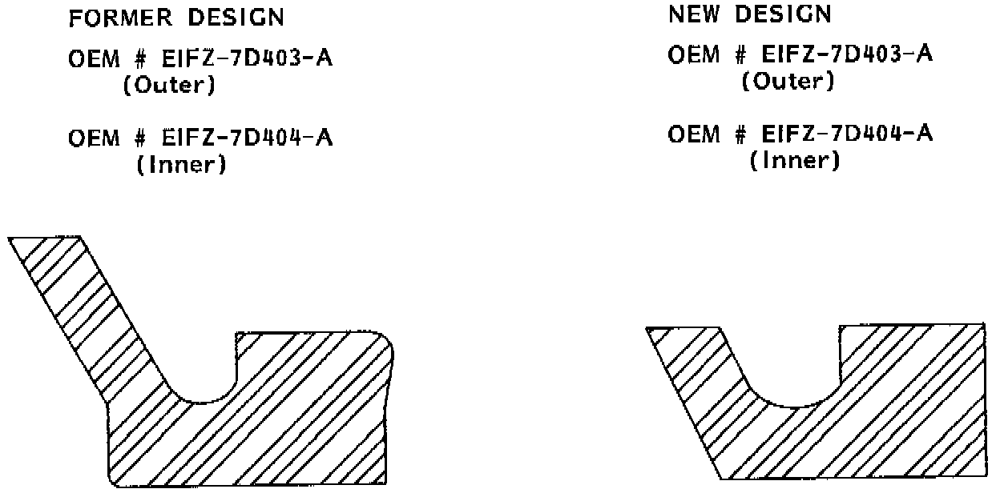

A/T - Twenty Steps To Successful Repairs
Service Information Letter # 89-27Date: August 1989
Subject: ATX New design lip seals

The low/reverse lip seals for the ATX transmission have been changed. The previous long lip design (see figure) was changed to a short lip, to aid in installation at the factory.
The new design seals will fit all years of the ATX, and eventually will be the only seals supplied. The Ford part numbers have not been changed for the new design seals.
NOTE:
The Ford service number has not changed for the new design.